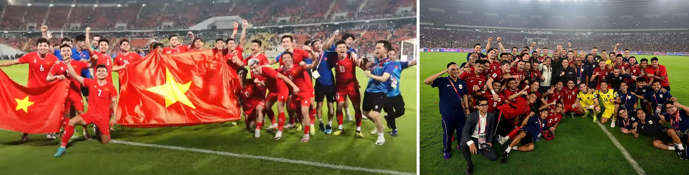

Десятилетие футбола Юго-Восточной Азии: что помогло лидерам и что сдерживает остальных
Данные по 11 сборным, семи лигам и их клубам показывают, почему вперёд вышли Таиланд, Вьетнам и Индонезия, где находятся Сингапур и Малайзия и какие проблемы должна решить каждая страна, включая Камбоджу.

Поворотный момент для честной игры: рождение Всемирного антидопингового агентства в Лозанне
Созданная 10 ноября 1999 года международная структура объединила правительства и олимпийское движение ради защиты честности спорта.

Мария Шарапова: от холодного старта до теннисного бессмертия
Вспоминаем удивительный путь российской иконы тенниса, которая выиграла Уимблдон еще подростком, собрала карьерный «Большой шлем» и навсегда вписала свое имя в историю спорта.

Сборная Бразилии прилетела в Сингапур на последние матчи 2026 года против Японии и Сингапура
Молодая команда Карло Анчелотти проведёт два товарищеских матча на Национальном стадионе в рамках турнира The Kallang Football Series, начав с повторения матча чемпионата мира против Японии 14 ноября.

Сорн Сейвмей: удары, которые вывели камбоджийское тхэквондо на мировую карту
Пройдя путь от тихого детства в Пномпене до исторического золота Азиатских игр в Инчхоне, эта пионерка тхэквондо изменила спортивный ландшафт своей родины.
Главное

Бунтарка, изменившая азиатский теннис: великий путь Ли На
Пройдя через личное горе в Ухане и триумфы на турнирах Большого шлема в Париже и Мельбурне, первая китайская чемпионка проложила собственный путь в истории.

От красных холмов Шервуд-Контента до вершины мировой легкой атлетики: Жизнь Усейна Болта
Прослеживаем путь ямайского спринтера, который переписал представление о человеческой скорости, преодолел ранние проблемы со здоровьем и оставил неизгладимый след в мировом спорте.

Скандал с открытым микрофоном: WTA отключила звук на тренировочных кортах после слов Пегулы
Глава тура Валери Камилло принесла извинения пятой ракетке мира за утечку в трансляцию нелестных высказываний о Мирре Андреевой

Новая Зеландия всухую разгромила Самоа и вышла в финал женского Кубка мира по регбилиг
Хет-трик Стейси Ваака принес сборной Новой Зеландии победу над соперницами со счетом 32:0 в полуфинале в Ньюкасле.

Четыре гола за 17 минут: ПСЖ разгромил «Вильярреал» 6:0, фавориты Лиги чемпионов отрываются
«Пари Сен-Жермен» и «Реал Мадрид» — единственные команды с четырьмя победами в четырёх матчах. Ближе всех к ним «Арсенал», «Комо» и «Барселона».
Ма Сяосю снова творит историю: как женская сборная Китая U-17 впервые дошла до четвертьфинала чемпионата мира
ФИФА высоко оценила работу бывшей обладательницы «Золотого мяча» в ее первый год на посту главного тренера: победы над США и Францией и обиднейший гол от Бразилии на 87-й минуте.
ФутболЕщё →
ТеннисЕщё →
АвтоспортЕщё →

Истории
Мария Шарапова: от холодного старта до теннисного бессмертия
Вспоминаем удивительный путь российской иконы тенниса, которая выиграла Уимблдон еще подростком, собрала карьерный «Большой шлем» и навсегда вписала свое имя в историю спорта.
Поворотный момент для честной игры: рождение Всемирного антидопингового агентства в Лозанне
Созданная 10 ноября 1999 года международная структура объединила правительства и олимпийское движение ради защиты честности спорта.